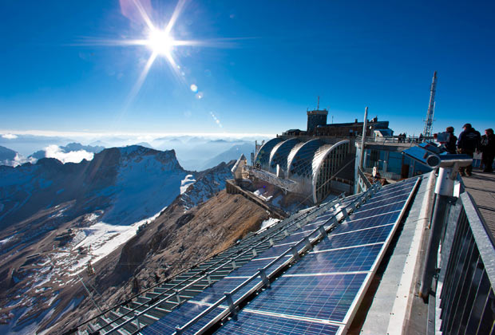
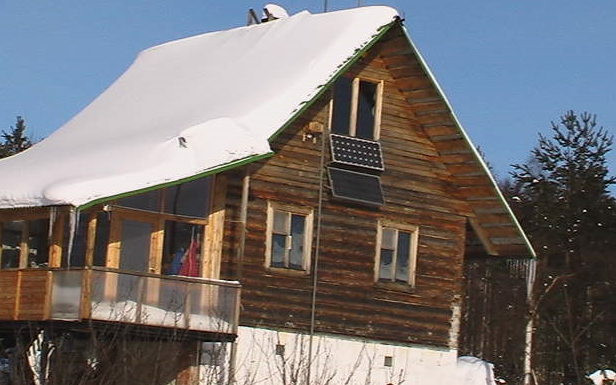
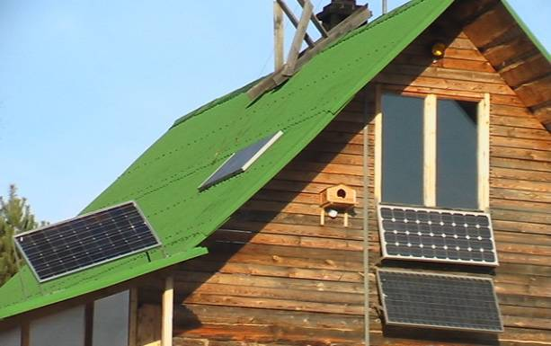
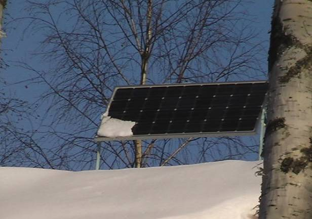
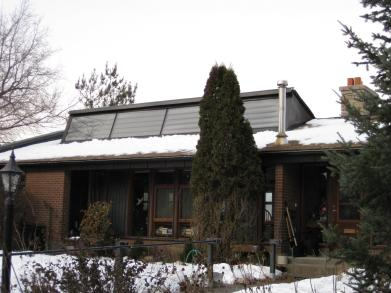
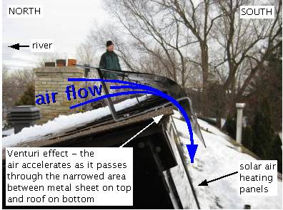

Работа солнечных батарей зимой, борьба со снегом

Пассивная защита от снега сводится к выбору места и правильной установке солнечных батарей.
На фото наглядно показаны результаты. Солнечные батареи на скате крыши и над верандой занесены снегом. На фронтоне весело преобразуют солнечное излучение в направленно движущиеся электроны.
Солнечный модуль на западном скате установлен неправильно.

Модуль над верандой необходимо поднять выше и уменьшить угол наклона. На снимке он равен 55 градусам.
Летом свесы над фронтоном ограничивают освещённость утренними и вечерними лучами солнца, что несколько компенсируется высотой солнцестояния.

Наглядный пример. И хотя модуль направлен на запад, снег почти не задерживается, благодаря продуваемому пространству и отсутствию упора снизу.
Жесткость крепежа оставляет желать лучшего.

Меньше всего электроэнергии солнечные батареи в нашем климате вырабатывают осенью. В пасмурную погоду межсезонья, когда световой день сократился, а снег ещё не выпал.
С первым снегом, когда отражающая способность поверхности земли значительно увеличивается, общая освещённость рассеянным излучением повышается.
Особенно это заметно, если солнечные элементы ламинированы на текстурированном стекле, о чём мы писали на странице
Здесь оказывает влияние и характер местности. Снежное поле отражает до 90% солнечных лучей или рассеянного излучения. Угол установки солнечных батарей в этих условиях соответствует географической широте, минус 15 – 20 градусов.
Плотная застройка или лес практически не отражают солнечный свет. Поэтому целесообразно увеличить угол наклона, с целью принять отражённый свет неба и облаков.

Канадской компанией Isolara Energy Services разработана система самоочистки солнечных батарей дома от снега. Это новая, инновационная самоочищающаяся система для солнечных батарей, в которой используется сила ветра и эффект Вентури. Довольно интересная система как нельзя лучше подойдёт для нас в России, где много снега, в среднем от четырех месяцев и более в году. Имеющийся у этой системы недостаток состоит в том, что иногда солнечные панели устанавливаются на крышах в мёртвой зоне, тое-есть там, где практически не бывает ветра. Эта система состоит из четырех солнечных панелей, соединенных между собой последовательно и простого устройства над батареями, усиливающего поток воздуха.

Эффект Вентури состоит в том, что воздух проходит через сужающиеся трубки. В сужающейся трубе давление воздуха уменьшается, а сам воздух ускоряется. Цель здесь в том, чтобы получить быстрое движение воздуха, который будет дуть на панели для очистки от снега, в общем чтобы сдуть снег с панели солнечной батареи установленной на крыше. В качестве сужающегося воздуховода не всегда может быть труба, иногда это просто изогнутый по длине листовой металл регулирующий движение потока воздуха. Такая система самоочистки годится не только для солнечных панелей вырабатывающих электричество, но и для нагревателя воздуха вашего дома от солнца, нагревателя воды и других солнечных систем.
Можно предположить, что быстро движущийся холодный воздух, проходящий через переднюю часть солнечной панели нагревателя воздуха, будет забирать тепло со стекла панели. Что бы этого не случилось, часть панели которая нагревается от солнца, отделяется внешним остеклением и воздушной прослойкой от поверхности панели. При этом обе выступают в качестве изоляторов. С добавлением этой системы Вентури, мы получаем отсутствие массы снега на панелях и в то же самое время батареи производящие большее количество электричества или тепла для вашего дома.